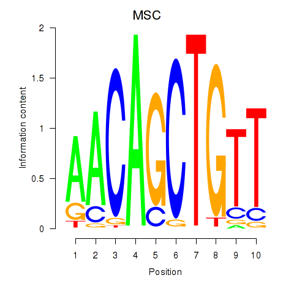
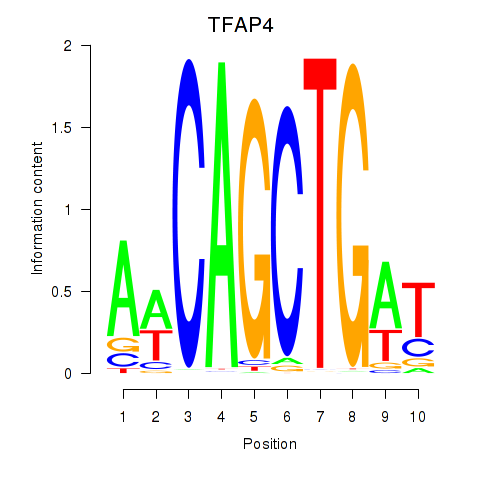

Motif ID: TFAP4_MSC
Z-value: 0.552


Transcription factors associated with TFAP4_MSC:
| Gene Symbol | Entrez ID | Gene Name |
|---|---|---|
| MSC | ENSG00000178860.8 | MSC |
| TFAP4 | ENSG00000090447.7 | TFAP4 |
![](http://string-db.org/api/image/network?network_flavor=evidence&limit=0&species=9606&caller_identity=MARA&identifiers=9606.ENSP00000262418%0D9606.ENSP00000351407%0D9606.ENSP00000368253%0D9606.ENSP00000249363%0D9606.ENSP00000392189%0D9606.ENSP00000352527%0D9606.ENSP00000284476%0D9606.ENSP00000356182%0D9606.ENSP00000308452%0D9606.ENSP00000362935%0D9606.ENSP00000328083%0D9606.ENSP00000280979%0D9606.ENSP00000260282%0D9606.ENSP00000334090%0D9606.ENSP00000399961%0D9606.ENSP00000261183%0D9606.ENSP00000295902%0D9606.ENSP00000410910%0D9606.ENSP00000315768%0D9606.ENSP00000343610%0D9606.ENSP00000377527%0D9606.ENSP00000354671%0D9606.ENSP00000378710%0D9606.ENSP00000286732%0D9606.ENSP00000325296%0D9606.ENSP00000385450%0D9606.ENSP00000399709%0D9606.ENSP00000436500%0D9606.ENSP00000363149%0D9606.ENSP00000345468%0D9606.ENSP00000300181%0D9606.ENSP00000362777%0D9606.ENSP00000258947%0D9606.ENSP00000398688%0D9606.ENSP00000372276%0D9606.ENSP00000264160%0D9606.ENSP00000345152%0D9606.ENSP00000448182%0D9606.ENSP00000336127%0D9606.ENSP00000290949%0D9606.ENSP00000362029%0D9606.ENSP00000225402%0D9606.ENSP00000362751%0D9606.ENSP00000363395%0D9606.ENSP00000322020%0D9606.ENSP00000356700%0D9606.ENSP00000377303%0D9606.ENSP00000362410%0D9606.ENSP00000352447%0D9606.ENSP00000338171%0D9606.ENSP00000437635%0D9606.ENSP00000293414%0D9606.ENSP00000299977%0D9606.ENSP00000309689%0D9606.ENSP00000253799%0D9606.ENSP00000395328%0D9606.ENSP00000333122%0D9606.ENSP00000387170%0D9606.ENSP00000346697%0D9606.ENSP00000424261%0D9606.ENSP00000325239%0D9606.ENSP00000234071%0D9606.ENSP00000367817%0D9606.ENSP00000364000%0D9606.ENSP00000344352%0D9606.ENSP00000276185%0D9606.ENSP00000332576%0D9606.ENSP00000272748%0D9606.ENSP00000345502%0D9606.ENSP00000354923%0D9606.ENSP00000285407%0D9606.ENSP00000368341%0D9606.ENSP00000229030%0D9606.ENSP00000342626%0D9606.ENSP00000395929%0D9606.ENSP00000304669%0D9606.ENSP00000294794%0D9606.ENSP00000314901%0D9606.ENSP00000355601%0D9606.ENSP00000241014%0D9606.ENSP00000340125%0D9606.ENSP00000297991%0D9606.ENSP00000260762%0D9606.ENSP00000312277%0D9606.ENSP00000290130%0D9606.ENSP00000380505%0D9606.ENSP00000321195%0D9606.ENSP00000352704%0D9606.ENSP00000246794%0D9606.ENSP00000323439%0D9606.ENSP00000356515%0D9606.ENSP00000384524%0D9606.ENSP00000355500%0D9606.ENSP00000363942%0D9606.ENSP00000263150%0D9606.ENSP00000370710%0D9606.ENSP00000356121%0D9606.ENSP00000375109%0D9606.ENSP00000340900%0D9606.ENSP00000269214%0D9606.ENSP00000314099)
{kind=link}
{kind=link}
{kind=link}
{kind=link}
Top targets:
Gene overrepresentation in biological_process category:
| Log-likelihood per target | Total log-likelihood | Term | Description |
|---|---|---|---|
| 0.1 | 0.3 | GO:0035283 | rhombomere 5 development(GO:0021571) central nervous system segmentation(GO:0035283) brain segmentation(GO:0035284) |
| 0.1 | 0.3 | GO:0015917 | aminophospholipid transport(GO:0015917) |
| 0.1 | 0.2 | GO:0061394 | regulation of transcription from RNA polymerase II promoter in response to arsenic-containing substance(GO:0061394) |
| 0.1 | 0.4 | GO:1902261 | positive regulation of delayed rectifier potassium channel activity(GO:1902261) |
| 0.0 | 0.1 | GO:0032765 | positive regulation of mast cell cytokine production(GO:0032765) |
| 0.0 | 0.1 | GO:0019085 | early viral transcription(GO:0019085) |
| 0.0 | 0.1 | GO:0002337 | B-1a B cell differentiation(GO:0002337) |
| 0.0 | 0.1 | GO:1903225 | negative regulation of endodermal cell differentiation(GO:1903225) |
| 0.0 | 0.1 | GO:0060796 | regulation of transcription involved in primary germ layer cell fate commitment(GO:0060796) |
| 0.0 | 0.2 | GO:0050915 | sensory perception of sour taste(GO:0050915) |
| 0.0 | 0.1 | GO:2000974 | auditory receptor cell fate determination(GO:0042668) negative regulation of pro-B cell differentiation(GO:2000974) |
| 0.0 | 0.3 | GO:0072513 | positive regulation of secondary heart field cardioblast proliferation(GO:0072513) |
| 0.0 | 0.1 | GO:0006051 | mannosamine metabolic process(GO:0006050) N-acetylmannosamine metabolic process(GO:0006051) |
| 0.0 | 0.1 | GO:0007525 | somatic muscle development(GO:0007525) |
| 0.0 | 0.1 | GO:2001045 | negative regulation of integrin-mediated signaling pathway(GO:2001045) |
| 0.0 | 0.2 | GO:0038031 | non-canonical Wnt signaling pathway via JNK cascade(GO:0038031) |
| 0.0 | 0.1 | GO:0019082 | viral protein processing(GO:0019082) regulation of nerve growth factor production(GO:0032903) negative regulation of nerve growth factor production(GO:0032904) dibasic protein processing(GO:0090472) |
| 0.0 | 0.2 | GO:0060480 | lung goblet cell differentiation(GO:0060480) |
| 0.0 | 0.1 | GO:0019072 | viral genome packaging(GO:0019072) viral RNA genome packaging(GO:0019074) |
| 0.0 | 0.1 | GO:0048203 | vesicle targeting, trans-Golgi to endosome(GO:0048203) |
| 0.0 | 0.1 | GO:0035408 | histone H3-T6 phosphorylation(GO:0035408) |
| 0.0 | 0.1 | GO:0030806 | negative regulation of cyclic nucleotide catabolic process(GO:0030806) negative regulation of cAMP catabolic process(GO:0030821) negative regulation of purine nucleotide catabolic process(GO:0033122) |
| 0.0 | 0.1 | GO:0014908 | myotube differentiation involved in skeletal muscle regeneration(GO:0014908) |
| 0.0 | 0.2 | GO:0086024 | adrenergic receptor signaling pathway involved in positive regulation of heart rate(GO:0086024) |
| 0.0 | 0.1 | GO:1990737 | response to manganese-induced endoplasmic reticulum stress(GO:1990737) |
| 0.0 | 0.1 | GO:0090649 | response to oxygen-glucose deprivation(GO:0090649) cellular response to oxygen-glucose deprivation(GO:0090650) |
| 0.0 | 0.3 | GO:0045075 | interleukin-12 biosynthetic process(GO:0042090) regulation of interleukin-12 biosynthetic process(GO:0045075) |
| 0.0 | 0.1 | GO:0016999 | antibiotic metabolic process(GO:0016999) |
| 0.0 | 0.1 | GO:2000639 | regulation of SREBP signaling pathway(GO:2000638) negative regulation of SREBP signaling pathway(GO:2000639) |
| 0.0 | 0.1 | GO:0051466 | positive regulation of corticotropin-releasing hormone secretion(GO:0051466) |
| 0.0 | 0.2 | GO:0046886 | positive regulation of hormone biosynthetic process(GO:0046886) |
| 0.0 | 0.1 | GO:0042985 | negative regulation of amyloid precursor protein biosynthetic process(GO:0042985) |
| 0.0 | 0.1 | GO:0034421 | post-translational protein acetylation(GO:0034421) |
| 0.0 | 0.1 | GO:1904404 | cellular response to vitamin B1(GO:0071301) response to formaldehyde(GO:1904404) |
| 0.0 | 0.0 | GO:0051685 | maintenance of ER location(GO:0051685) |
| 0.0 | 0.0 | GO:2000547 | mesangial cell-matrix adhesion(GO:0035759) regulation of dendritic cell dendrite assembly(GO:2000547) |
| 0.0 | 0.1 | GO:0035936 | testosterone secretion(GO:0035936) regulation of testosterone secretion(GO:2000843) positive regulation of testosterone secretion(GO:2000845) |
| 0.0 | 0.2 | GO:0007258 | JUN phosphorylation(GO:0007258) |
| 0.0 | 0.2 | GO:0000722 | telomere maintenance via recombination(GO:0000722) |
| 0.0 | 0.2 | GO:0060842 | arterial endothelial cell differentiation(GO:0060842) |
| 0.0 | 0.1 | GO:0019086 | late viral transcription(GO:0019086) |
| 0.0 | 0.1 | GO:0002036 | regulation of L-glutamate transport(GO:0002036) |
| 0.0 | 0.0 | GO:0045875 | regulation of maintenance of sister chromatid cohesion(GO:0034091) regulation of maintenance of mitotic sister chromatid cohesion(GO:0034182) negative regulation of sister chromatid cohesion(GO:0045875) |
| 0.0 | 0.2 | GO:0035372 | protein localization to microtubule(GO:0035372) |
| 0.0 | 0.2 | GO:0060539 | diaphragm development(GO:0060539) |
| 0.0 | 0.1 | GO:1901098 | positive regulation of autophagosome maturation(GO:1901098) |
| 0.0 | 0.0 | GO:0061743 | motor learning(GO:0061743) |
| 0.0 | 0.0 | GO:0019262 | N-acetylneuraminate catabolic process(GO:0019262) |
Gene overrepresentation in cellular_component category:
| Log-likelihood per target | Total log-likelihood | Term | Description |
|---|---|---|---|
| 0.1 | 0.2 | GO:1990622 | CHOP-ATF3 complex(GO:1990622) |
| 0.0 | 0.2 | GO:0035061 | interchromatin granule(GO:0035061) |
| 0.0 | 0.1 | GO:0005588 | collagen type V trimer(GO:0005588) |
| 0.0 | 0.2 | GO:0070545 | PeBoW complex(GO:0070545) |
| 0.0 | 0.4 | GO:0014701 | junctional sarcoplasmic reticulum membrane(GO:0014701) |
| 0.0 | 0.2 | GO:0044294 | dendritic growth cone(GO:0044294) |
| 0.0 | 0.1 | GO:0097451 | multi-eIF complex(GO:0043614) translation preinitiation complex(GO:0070993) glial limiting end-foot(GO:0097451) |
| 0.0 | 0.1 | GO:1990635 | proximal dendrite(GO:1990635) |
| 0.0 | 0.1 | GO:0030121 | AP-1 adaptor complex(GO:0030121) |
| 0.0 | 0.1 | GO:1990452 | Parkin-FBXW7-Cul1 ubiquitin ligase complex(GO:1990452) |
| 0.0 | 0.2 | GO:0033179 | proton-transporting V-type ATPase, V0 domain(GO:0033179) |
Gene overrepresentation in molecular_function category:
| Log-likelihood per target | Total log-likelihood | Term | Description |
|---|---|---|---|
| 0.1 | 0.2 | GO:0004874 | aryl hydrocarbon receptor activity(GO:0004874) |
| 0.0 | 0.1 | GO:0052593 | tryptamine:oxygen oxidoreductase (deaminating) activity(GO:0052593) aminoacetone:oxygen oxidoreductase(deaminating) activity(GO:0052594) aliphatic-amine oxidase activity(GO:0052595) phenethylamine:oxygen oxidoreductase (deaminating) activity(GO:0052596) |
| 0.0 | 0.1 | GO:0015254 | glycerol channel activity(GO:0015254) |
| 0.0 | 0.1 | GO:0070984 | SET domain binding(GO:0070984) |
| 0.0 | 0.1 | GO:0035403 | histone kinase activity (H3-T6 specific)(GO:0035403) |
| 0.0 | 0.1 | GO:0042799 | histone methyltransferase activity (H4-K20 specific)(GO:0042799) |
| 0.0 | 0.2 | GO:0008553 | hydrogen-exporting ATPase activity, phosphorylative mechanism(GO:0008553) |
| 0.0 | 0.1 | GO:0004105 | choline-phosphate cytidylyltransferase activity(GO:0004105) |
| 0.0 | 0.6 | GO:0043495 | protein anchor(GO:0043495) |
| 0.0 | 0.1 | GO:0061663 | NEDD8 ligase activity(GO:0061663) |
| 0.0 | 0.1 | GO:0008431 | vitamin E binding(GO:0008431) |
| 0.0 | 0.0 | GO:0010698 | acetyltransferase activator activity(GO:0010698) |
| 0.0 | 0.2 | GO:0008503 | benzodiazepine receptor activity(GO:0008503) |
| 0.0 | 0.2 | GO:0005078 | MAP-kinase scaffold activity(GO:0005078) |
| 0.0 | 0.1 | GO:0072345 | NAADP-sensitive calcium-release channel activity(GO:0072345) |
| 0.0 | 0.0 | GO:0015361 | low-affinity sodium:dicarboxylate symporter activity(GO:0015361) |
| 0.0 | 0.0 | GO:0005018 | platelet-derived growth factor alpha-receptor activity(GO:0005018) |
| 0.0 | 0.2 | GO:0015197 | peptide transporter activity(GO:0015197) |
| 0.0 | 0.3 | GO:0004012 | phospholipid-translocating ATPase activity(GO:0004012) |
| 0.0 | 0.1 | GO:0001515 | opioid peptide activity(GO:0001515) |
| 0.0 | 0.1 | GO:0050816 | phosphothreonine binding(GO:0050816) |
| 0.0 | 0.2 | GO:0031698 | beta-2 adrenergic receptor binding(GO:0031698) |
| 0.0 | 0.1 | GO:0008422 | beta-glucosidase activity(GO:0008422) |
| 0.0 | 0.1 | GO:0004719 | protein-L-isoaspartate (D-aspartate) O-methyltransferase activity(GO:0004719) |
|
|
|
|